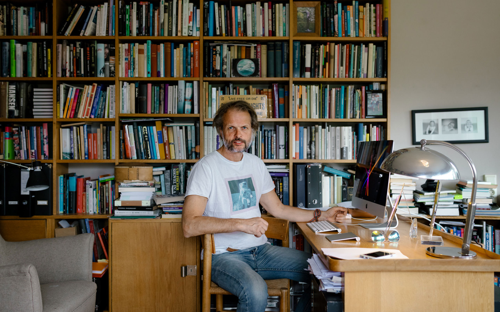

Erling Kagge… Norveçli kâşif, koleksiyoner… Hem Everest’in zirvesine, hem Güney Kutbu’na, hem de Kuzey Kutbu’na yardımsız ulaşarak The Three Poles Challange’ı gerçekleştirebilen az sayıdaki insandan biri. Üstelik Güney Kutbu’nu keşfe tek başına çıkmış. 1996 yılında kurduğu Kagge Forlag yayınevinin sahibi ve orada çalışıyor. Özenilecek bir hayat.
Gürültü Çağında Sessizlik kitabında sessizliği dinlemenin, sessizlik içinde oturabilmenin kıymetinden bahsediyor Erling Kagge. 50 gün süren ve tek başına gerçekleştirdiği Güney Kutbu yürüyüşünde bu durumu fazlasıyla deneyimlediğini hayal edebiliyorum.
Ben Güney Kutbu’na tek başıma yürüyemesem de sessizliği dinlemek ve kendi başıma hiçbirşey yapmadan sessizce oturmak sıklıkla yaptığım ve genellikle tuhaf karşılanmama sebep olan davranışlardandır. Çoğunlukla aldığım tepki “Sıkılmıyor musun?†olur.
Ülkemizdeki yaşantı içerisinde gereksiz tartışmaların ve boş muhabbetin içinde kaybolmadan kendini dinlemeye fırsat bulabilmek büyük bir başarı. Geçen yıl Norveç’de geçirdiğim kısa süre içerisinde, başkasının ne düşündüğünü umursamadan kendi halinde yaşayan ve gerekmedikçe konuşmayan insanların Gürültü Çağında Sessizlik içinde yaşayabiliyor olmalarını hem kıskanmış hem de tuhaf bir aidiyet hissetmiştim.